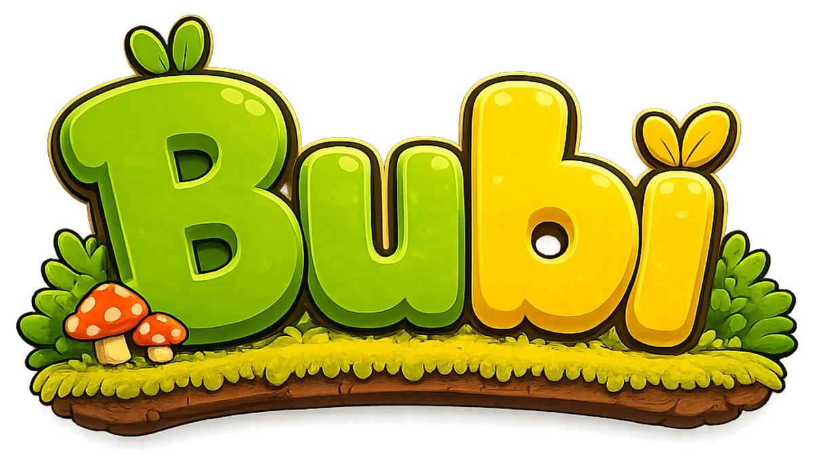

Движение и прыжок
Быстрый отклик, двойной прыжок и воздушный контроль — чтобы уровни было приятно исследовать, а не просто проходить по прямой.
БУБИ · В РАЗРАБОТКЕ

Буби просто хотел спокойно устроить пикник. Но голодный демон украл корзинку с вкусностями — и теперь толстой зелёной птичке придётся прыгать, давить врагов и пробираться через яркие миры, чтобы вернуть свой заслуженный пирог.

О ПРОЕКТЕ
Буби — это яркий 2D-платформер без лишней сложности: бегаем, прыгаем, ищем тайные тропы, кидаем яйца во врагов и иногда просто падаем на них всем своим весом.
Игра строится вокруг простого ощущения: легко начать, приятно двигаться и интересно свернуть с основной дороги ради секрета.
ЗАВЯЗКА
Буби собрался устроить идеальный пикник: тёплый лес, мягкая полянка и целая корзинка любимых вкусностей. Но стоило ему отвернуться, как из кустов выскочил голодный демон, схватил корзинку и бросился наутёк.
Теперь Буби предстоит отправиться в погоню через яркие и опасные места: летний лес, осенние тропы, пустыню, древние руины, снежные земли и даже поезд, мчащийся вперёд.
На пути будут забавные враги, тайные тропы, ловушки и потерянные вкусности. А в самом конце Буби ждёт огненное логово демона, где решится главное: вернёт ли он свою корзинку и сможет ли наконец спокойно устроить пикник.
ОСНОВА ГЕЙМПЛЕЯ
Это не сложность ради сложности: каждая механика должна быстро читаться и сразу давать игроку ощущение контроля.
Быстрый отклик, двойной прыжок и воздушный контроль — чтобы уровни было приятно исследовать, а не просто проходить по прямой.
Дальняя атака для ситуаций, когда прыгать сверху опасно или враг мешает пройти дальше.
Когда враг под ногами, Буби может решить вопрос весом: обрушиться сверху и раздавить противника.
ВРАГИ
Каждый враг нужен не просто для картинки: он меняет маршрут, тайминг прыжка или заставляет следить за воздухом.
ОБЫЧНЫЙ ВРАГ
Слайм перекрывает путь и учит вовремя прыгать, атаковать или давить сверху. Простой враг, но хороший первый тест реакции.

ЛЕТАЮЩИЙ ПРОТИВНИК
Кусач атакует с воздуха и ломает привычный безопасный маршрут. С ним уже нужно смотреть не только под ноги.
ГАЛЕРЕЯ
Здесь собраны локации, настроение и небольшие игровые детали, которые помогают почувствовать приключение.